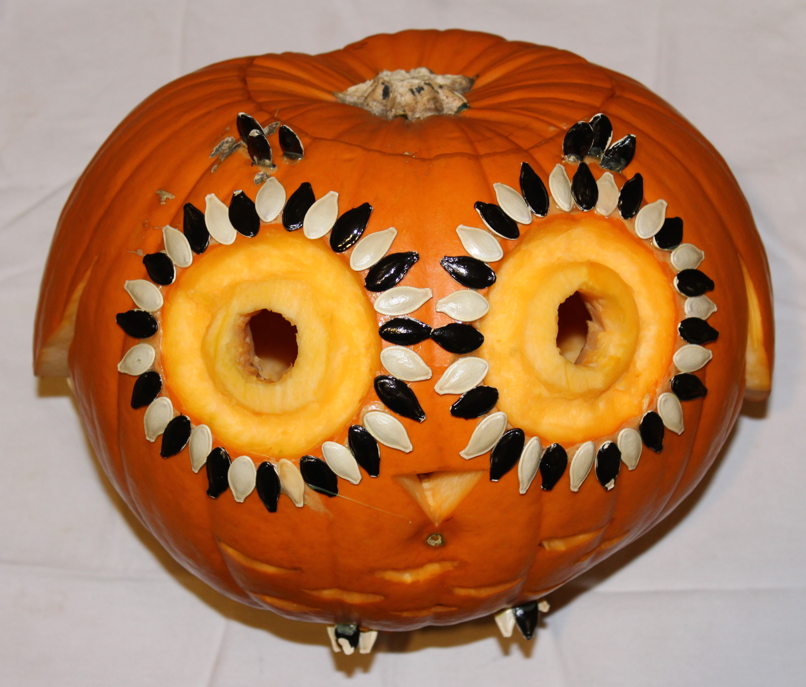
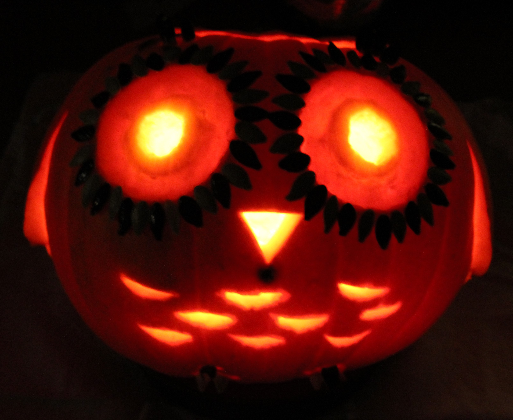
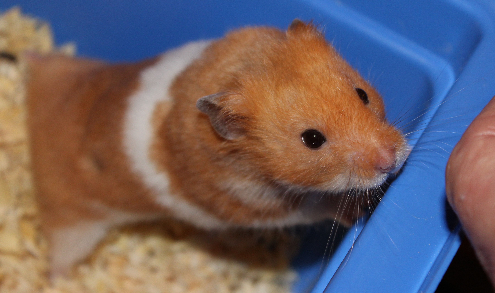

25-Oct-2017 | Milku
Will Unsy lead the Toffees to victory?
We're still days away from Halloween, but my little humans had the opportunity to dress up and celebrate yesterday. Those Guides and Brownies love a good party. I think some of the fake blood was a bit tricky to wash off so my little girls have headed to school with pink blotches on their skin!
The littlest human carved a pumpkin that won the Brownie competition too. While it's a very nice owl, I think she should have created a pumpkin hamster...
 The end of term is already upon us...there'll be no peace for me for the next week or so. I'll have to get plenty of sleep this afternoon in preparation for that.
But I can't sleep too late this evening. I'll have to be up following Everton's fortunes in the Carabao Cup. Surely David Unsworth can inspire the boys to beat Chelsea!